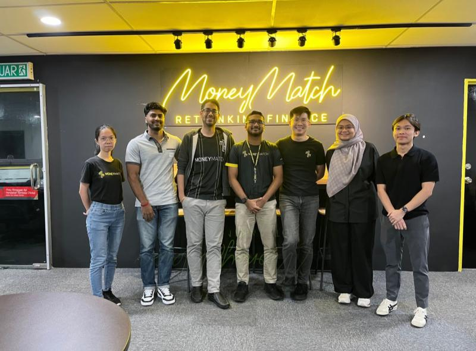

Hey! I’m Arif, a final-year Computer Science student at The University of Queensland, majoring in Data Science. With a passion for data analytics and a knack for problem-solving, I’m on a journey to become a data engineer. Throughout my studies and hands-on experience, like my internship at MoneyMatch, I've developed skills in programming languages like Python, R, and React, as well as data tools such as AWS QuickSight.
I've tackled projects ranging from building machine learning models to automating data workflows and optimizing ETL processes. I enjoy diving into the technical side to make data-driven solutions more efficient and meaningful. Staying on top of tech trends keeps me motivated, and I love using my skills to solve real-world problems.
Outside the tech world, I stay active through sports and exploring new places. My goal is to combine my data engineering skills with my curiosity for new challenges to help organizations make smarter decisions. If you’re looking for someone who’s passionate about data and ready to make a positive impact, let's connect!
-
Python
-
React
-
R
-
MySQL
-
Java
Additional Tools & Technologies: Pandas, Numpy, HTML5, JavaScript, Oracle, C
Cloud & Data Tools: AWS QuickSight, Azure, Git, ML frameworks (TensorFlow, PyTorch), R Shiny, Power BI, Tableau
Throughout my undergraduate studies, I have gained experience working with a variety of programming languages and data tools, both through coursework and hands-on projects. I am also continuously expanding my skills through online courses, particularly in data science, machine learning, and cloud computing.
My internship at MoneyMatch, a rapidly expanding Malaysian fintech company, has been an incredibly rewarding journey. As a Data Science intern working with the data team, I gained valuable hands-on experience and made significant contributions to impactful projects.
One of the highlights of my internship was leading the development of customized dashboards using AWS QuickSight, alongside fellow data intern Darrshan. We created detailed visualizations for management and various departments, which involved extensive data preprocessing and analysis. Knowing that our efforts would have a lasting benefit for the company was especially fulfilling.
Throughout my time at MoneyMatch, I developed a wide range of skills, from data analysis and machine learning to ETL process optimization. I had the opportunity to work closely with my mentors, Aida Farah and Goh Wei Chen, who provided guidance, support, and challenging tasks that significantly contributed to my growth. The practical experience I gained far exceeded my initial expectations and equipped me with valuable skills for a future career in data science.
I am also grateful for the remarkable friendships I formed with my fellow interns, who made the experience both valuable and memorable.
Internship Highlights

Projects
Student Management System
Made with: HTML, PHP, Javascript, and MySQL
A web application that manages the personal information records of students, allowing for the viewing, insertion, deletion, and updating of the records.